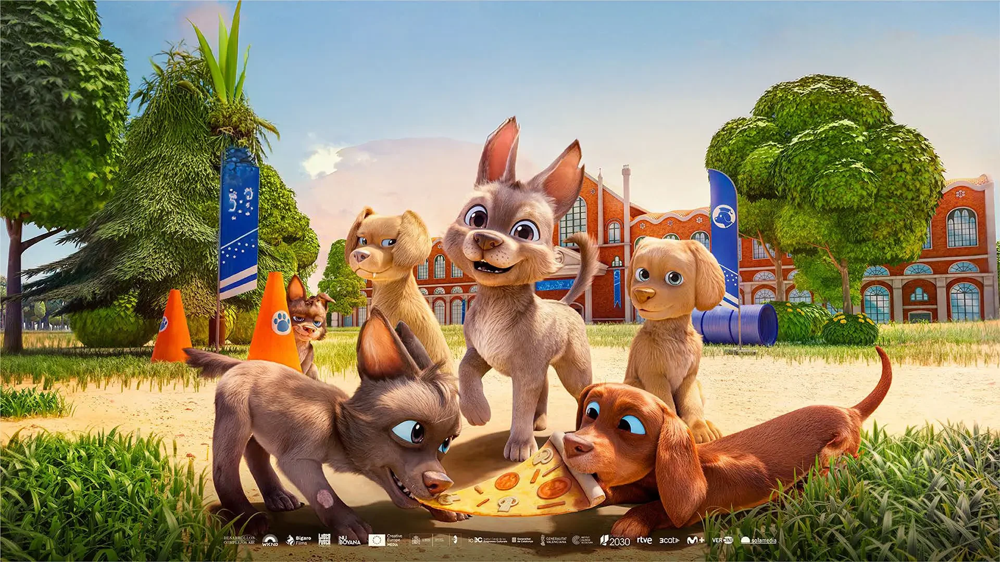

Versió apilada
El descriptor se situa sota GUS. Per a portades, cartells i formats quadrats o verticals.
Obre el fitxer original · Versió apilada · Negre →
Els elements que donen forma al món de GUS.
Aquesta guia reuneix els elements visuals de GUS, el gos pigall, i els criteris per aplicar-los de manera coherent, clara i accessible.
Utilitza els logotips tal com es presenten: no els redibuixis, no els deformis i respecta les combinacions de color indicades. El contrast, la llegibilitat i la jerarquia formen part de cada decisió.
Accedeix als materials originals →Les lletres irregulars i la petjada integrada en el títol donen al logotip de GUS un caràcter proper i juganer. Disposa de dues composicions: horitzontal i apilada.
Tots els logotips en català →El descriptor se situa sota GUS. Per a portades, cartells i formats quadrats o verticals.
Obre el fitxer original · Versió apilada · Negre →El nom i el descriptor se situen l’un al costat de l’altre. Per a capçaleres i espais allargats.
Obre el fitxer original · Versió horitzontal · Negre →

Conserva les proporcions, la textura i la composició dels originals. Deixa espai al voltant del logotip i tria un fons que permeti distingir tot el títol. La mida mínima s’ha de validar en el suport final.
Una base de crema i blau nit, amb taronja com a accent principal. El verd i el groc amplien l’univers visual de GUS. El crema del logotip original es conserva.
#172B46RGB 23 / 43 / 70
CMYK (aprox.) C67% · M39% · Y0% · K73%
RAL CLASSIC (aprox.) 5013
Text principal i fons foscos.
#FFF8E8RGB 255 / 248 / 232
CMYK (aprox.) C0% · M3% · Y9% · K0%
RAL CLASSIC (aprox.) 9012
Fons principal i zones de lectura.
#2457A7RGB 36 / 87 / 167
CMYK (aprox.) C78% · M48% · Y0% · K35%
RAL CLASSIC (aprox.) 5005
Enllaços i botons secundaris.
#F28C45RGB 242 / 140 / 69
CMYK (aprox.) C0% · M42% · Y71% · K5%
RAL CLASSIC (aprox.) 2003
Accions principals i accents.
#386447RGB 56 / 100 / 71
CMYK (aprox.) C44% · M0% · Y29% · K61%
RAL CLASSIC (aprox.) 6001
Suport gràfic i blocs secundaris.
#F2C44ERGB 242 / 196 / 78
CMYK (aprox.) C0% · M19% · Y68% · K5%
RAL CLASSIC (aprox.) 1018
Destacats breus i detalls.
Referències de color: PIGMENTUM · RAL Colours
El contrast depèn de la parella de colors. Aquestes combinacions superen el mínim WCAG AA de 4,5:1 per a text normal.
Els valors es calculen sobre colors sòlids, sense transparències. S’apliquen al text informatiu; les imatges i els fons variables s’han de revisar en cada aplicació.
| Text | Fons | Contrast |
|---|---|---|
| Blau nit | Crema càlid | 13.50:1 |
| Crema càlid | Blau nit | 13.50:1 |
| Blau guia | Crema càlid | 6.62:1 |
| Blanc | Blau guia | 7.01:1 |
| Verd parc | Crema càlid | 6.44:1 |
| Blanc | Verd parc | 6.81:1 |
| Blau nit | Taronja aventura | 5.86:1 |
| Blau nit | Groc sol | 8.69:1 |
Evita el text blanc sobre taronja (2,44:1) i el taronja o el groc sobre crema. Per als botons taronja sobre crema, afegeix una vora blau nit. Subratlla els enllaços i acompanya els estats amb etiquetes o icones.
Consulta el criteri de contrast WCAG →Fredoka dona veu als titulars de GUS i complementa el caràcter proper i juganer del logotip. Atkinson Hyperlegible Next aporta claredat i llegibilitat als textos.
Una gran aventura comença amb un petit pas.
Alfabet
ABCDEFGHIJKLMNOPQRSTUVWXYZ
abcdefghijklmnopqrstuvwxyz
Accents i signes
À È É Í Ï Ò Ó Ú Ü Ç Ñ · à è é í ï ò ó ú ü ç ñ · l·l
0123456789 · . , : ; ! ? ¿ ¡ ( ) & @ %
Fredoka aporta formes arrodonides i una construcció més geomètrica. Crea un contrast ordenat amb les lletres irregulars del logotip i dona a la identitat un to alegre i contemporani.
Atkinson Hyperlegible Next organitza la informació i ofereix una veu més sòbria per a sinopsis, fitxes, navegació i textos llargs.
En GUS té un somni: convertir-se en gos pigall. Amb optimisme, amistat i ganes d’aprendre, descobreix que cada pas compta.
Alfabet
ABCDEFGHIJKLMNOPQRSTUVWXYZ
abcdefghijklmnopqrstuvwxyz
Accents i signes
À È É Í Ï Ò Ó Ú Ü Ç Ñ · à è é í ï ò ó ú ü ç ñ · l·l
0123456789 · . , : ; ! ? ¿ ¡ ( ) & @ %
Atkinson Hyperlegible Next està dissenyada per afavorir la diferenciació de caràcters i la lectura de persones amb baixa visió. La tria tipogràfica s’ha de completar amb contrast, mida i composició adequats.
Atkinson Hyperlegible Next · Braille Institute →Com a punt de partida per a web: text de 18 px, interlineat d’1,5 i paràgrafs alineats a l’esquerra. Reserva la tipografia expressiva per als missatges breus i permet ampliar el text sense perdre contingut.
I l 1 · O 0 · rn m · à è é í ï ò ó ú ü ç · l·l · ¿? ¡!
Per a consultes sobre la guia, els materials de marca o el projecte, contacta amb Federica Mastrullo.
Federica Mastrullo
fmastrullo@guselperroguia.com